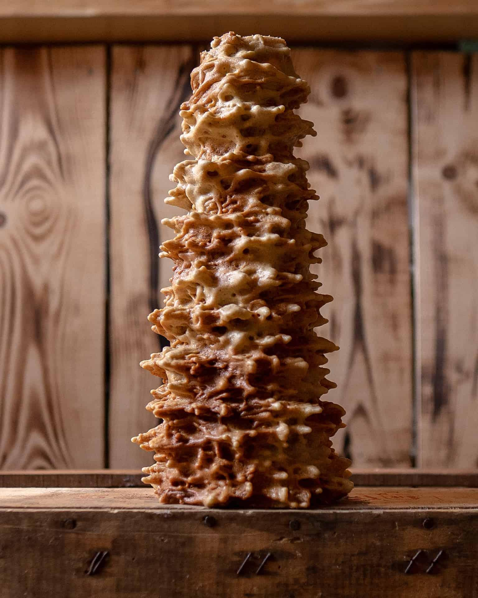

Le gâteau
à la broche


⟹ Recette sucrée ⟸
Une broche de bois qui tourne devant les flammes, une louche de pâte versée encore et encore, des heures de patience : le gâteau à la broche est moins une recette qu'un rituel. Dans les vallées des Pyrénées et sur les plateaux de l'Aveyron, il signait les grands jours de la famille.
Le principe tient en une phrase : on verse une pâte liquide sur une broche conique qui tourne devant un feu de bois. La pâte cuit, se fige comme une crêpe, puis on en verse une nouvelle couche, et encore une autre. En coulant, la pâte forme des pointes qui durcissent en « stalactites ». Au bout de plusieurs heures, on obtient un grand cône hérissé, que l'on démoule à froid. Tranché, il révèle des cernes dorés, comme le tronc d'un arbre.
Dans les Hautes-Pyrénées comme dans l'Aveyron, chaque village et chaque famille a sa manière de faire. Le gâteau était la pièce d'honneur des mariages et des baptêmes, et les grands-mères transmettaient le tour de main à leurs petits-enfants : la vitesse de rotation, la distance au feu, le moment exact où verser la louche suivante.

L'origine du gâteau reste discutée. On en trouve des cousins dans toute l'Europe : le Baumkuchen (« gâteau-arbre ») en Allemagne, le šakotis en Lituanie, le sękacz en Pologne, la spettekaka en Suède. Une tradition l'attribue au pâtissier du roi de Prusse, à Salzwedel, dans les années 1790. Une autre veut que les soldats de Napoléon, de retour des campagnes d'Europe de l'Est, l'aient fait connaître en France. Aucune de ces histoires n'est prouvée, et la technique de la pâte cuite à la broche est sans doute bien plus ancienne.
Ce qui est sûr, c'est que le gâteau s'est enraciné dans les montagnes françaises, et en particulier dans les Pyrénées et le Massif central, où le feu de bois et la patience ne manquaient pas pendant les longues soirées d'hiver.
Au feu de bois, aucune machine ne remplace l'œil : il faut sentir la chaleur, guetter la couleur, et ne jamais laisser la broche s'arrêter.
Aujourd'hui, la broche est souvent motorisée et le gâteau se vend dans les boulangeries et pâtisseries de montagne, de Luz-Saint-Sauveur à Saint-Lary, et dans tout l'Aveyron. Grâce à sa longue conservation, une quinzaine de jours, il est devenu le « gâteau souvenir » par excellence.
À Arreau, dans la vallée d'Aure, la Confrérie du Gâteau à la broche organise chaque année en juillet une fête avec démonstrations et dégustations. Les records, eux, se disputent entre la Haute-Garonne et l'Aveyron : 63,8 kg en 2002 à Calmont, puis 106 kg en 2019 à Villefranche-de-Rouergue, avec 850 œufs.
Le gâteau à la broche est riche en beurre et en œufs, avec un léger goût de caramel apporté par le feu. Il appelle un vin moelleux plein de fraîcheur, de préférence des vignobles du piémont pyrénéen.
Jurançon moelleux
AOP Jurançon · Pyrénées-Atlantiques (64)
Le petit et le gros manseng donnent des notes de fruits exotiques, de miel et d'agrumes, avec une acidité vive qui allège le beurre du gâteau.
Pacherenc du Vic-Bilh moelleux
AOP · Hautes-Pyrénées (65), Gers (32)
Le vin doux des Hautes-Pyrénées, voisin des vallées où l'on tourne la broche : fruits confits et belle fraîcheur.
Gaillac doux
AOP Gaillac · Tarn (81)
Pour la version rouergate : le mauzac apporte des arômes de pomme cuite et de coing qui s'accordent avec la pâte dorée.
Blanquette de Limoux, méthode ancestrale
AOP · Aude (11)
Douce et légère, elle accompagne une tranche de gâteau au goûter ou au café.
Baumkuchen allemand, šakotis lituanien, sękacz polonais, spettekaka suédoise (protégée par une IGP) : le gâteau à la broche a des parents dans toute l'Europe.
En 2019, le comité des fêtes de Pachins a réalisé à Villefranche-de-Rouergue un gâteau de 106 kg, avec 850 œufs et 35 kg de farine, de sucre et de beurre.
Introduit au Japon en 1919 par le pâtissier allemand Karl Juchheim, le Baumkuchen y est devenu un gâteau de cadeau très populaire.
Chaque été, la Confrérie du Gâteau à la broche réunit artisans et gourmands à Arreau, dans la vallée d'Aure, pour des démonstrations au feu de bois.